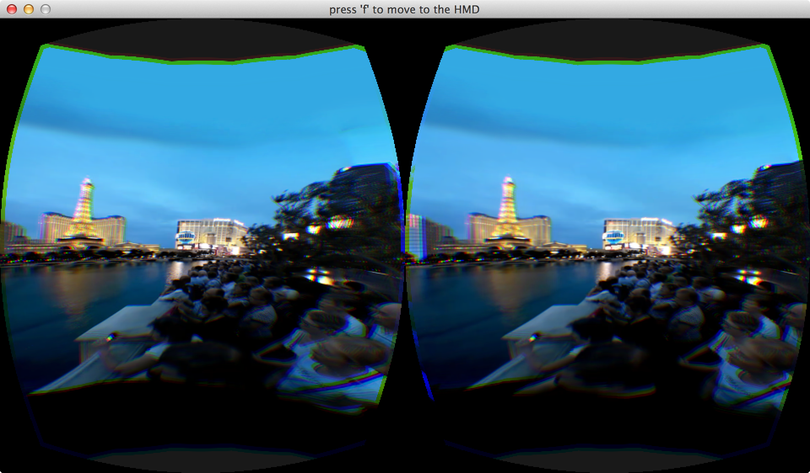
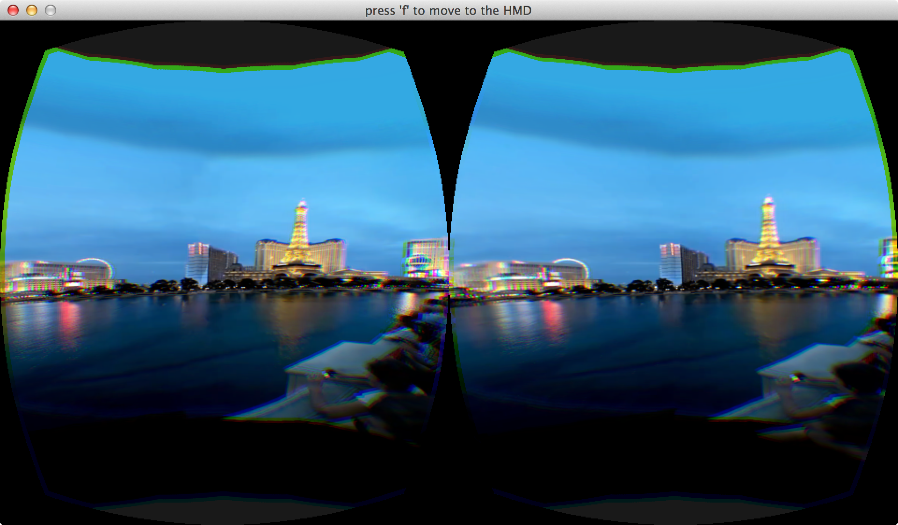

Project Checkpoint
Work Completed
We're currently working on getting our renderer working. First, we set up our build system with CMake. We installed OpenCV, OpenGL, CUDA, GLU, GLUT, GLEW, SDL, OVR (Oculus), and related libraries. Setting up buildable code from scratch was more difficult than expected, especially since we tried to do it cross-platform to suit our own development needs. It turns out cross-platform development is non-trivial, as different things have to happen when including and using libraries (and especially OpenGL and Oculus) in both the CMake files and the code, in addition to the complexities of installing said libraries on your machine. In particular, Apple is different all the time, because that is how they think. We will probably be moving to just one OS.
We found some high resolution panoramic video, and we used OpenCV to read it in frame by frame. In particular, we are testing on the first link for the first video on that site, and the first link for the second video (water fountain). We first got it to simply render that same frame (reading it from a hard disk), at about 30 FPS. We then got the whole video to read with OpenCV and render with OpenGL, but with quite a low framerate. Then, we set up a scene with a cylinder that displayed frames from the video. We then got the scene to work with the Oculus. Then, we got 3D working on Oculus. So currently, we're using OpenCV to read a frame from the video, and then load it to an OpenGL texture with glTexImage2D. Both OpenCV and the texture seem to be quite slow, so we only load a new video frame every 25 OpenGL frames to make the Oculus not uncomfortable. However, glTexImage2D is quite a naive way to stream video, and we are looking into putting in place better ways.
Plans
We plan to have a renderer that can render to the Oculus in real time. We also plan to have some view optimization for focusing on certain parts of an image.
During the parallelism competition, we would like to demo our renderer, on the Oculus, so people can see it work. We can also show how much less data view optimization allows us to send between a client and server via graphs.
Preliminary Results
We are currently able to render panoramic images to cylinders using texture mapping to the Oculus in 3D.
 
Issues and Concerns
Right now, the video sample (even without any view optimization) does not render very fast. The framerate is low enough that each individual frame is noticeable when run on the Oculus itself. So, we need to have our implementation be fast enough that it isn't an issue.